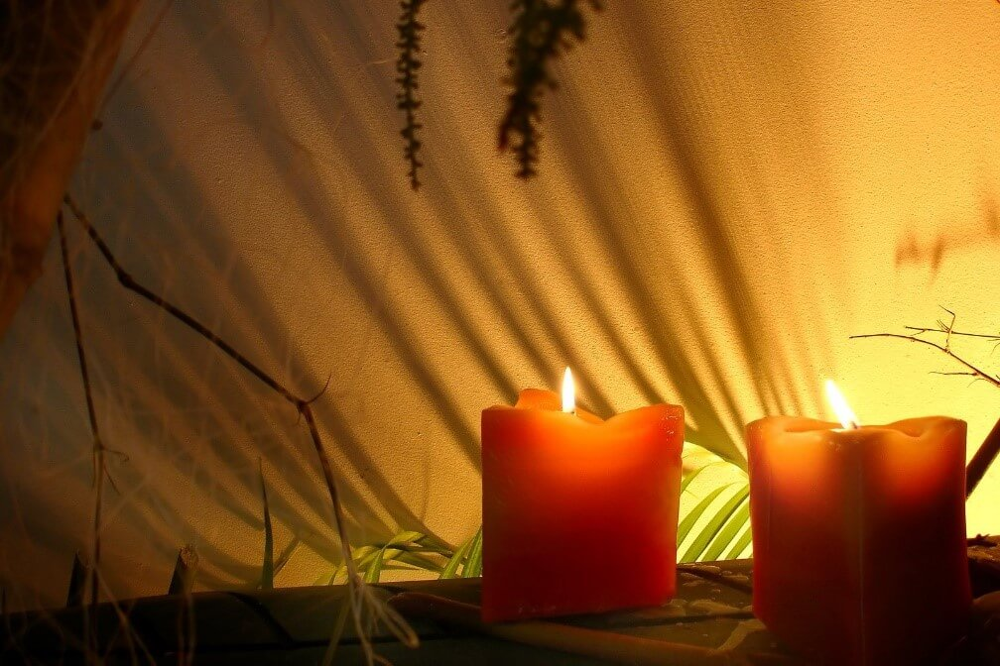
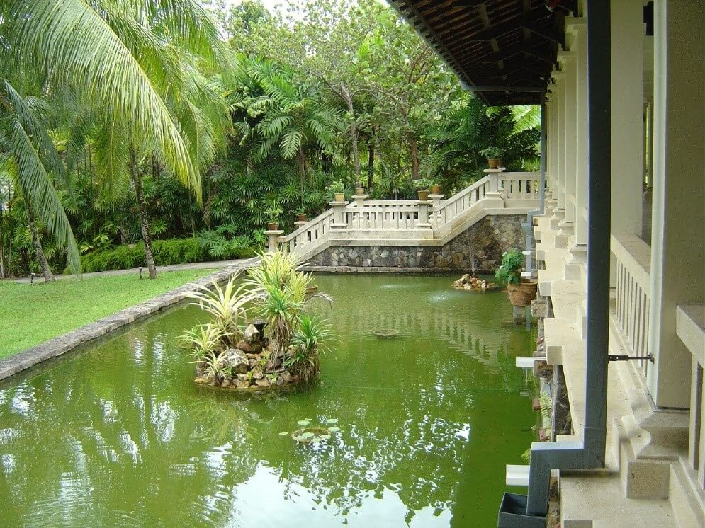
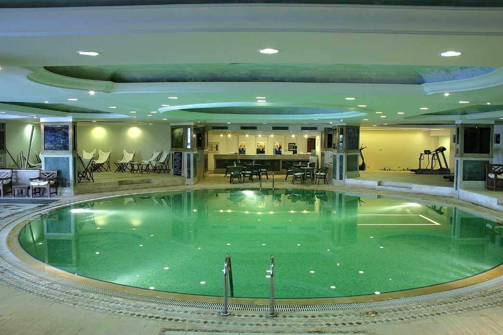

العلاج في تركيا
تحوي تركيا عدداً كبيراً من المشافي والمجمعات الطبيَّة الضخمة، بجانب غناها وتميُّزها بعلاجات طبيَّة دقيقة، سواءً باستخدام الروبوت أو بالآليات الطبيَّة المختلفة، وبتكاليف علاج مقبولة

أفضل المنتجعات الاستشفائية في تركيا
سنتعرف في هذا المقال على أهمية المنتجعات الاستشفائية والخدمات العلاجية التي تقدمها وأهم وأشهر المنتجعات العلاجية الصحية السياحية في تركيا
جدول المحتويات
ما هو المنتجع العلاجي؟
سواء كان فندقا أو قرية سياحية يشمل المنتجع العلاجي جميع الأنشطة الطبية التي نشأت استنادا إلى الأدلة العلمية التي تهدف إلى تعزيز الصحة والوقاية والعلاج وإعادة التأهيل ، والعناصر الأساسية في المنتجعات الصحية هي العلاج بالمياه المعدنية، والعلاج بالإستحمام، والعلاج المناخي عبر توفير بيئة صحية مريحة للجسد والعقل ، وتحوي العديد منها صالات للتمارين الرياضية و بالإضافة تقدم وجبات غذائية مقترنة بأمراض معينة.
فوائد المنتجعات العلاجية في تركيا
أحد أهم أسباب رواج المنتجعات العلاجية في تركيا هي فوائدها الطبية ، فالكثير يعاني من ضغوط الحياة اليومية ويبحث عن مكان مريح للإسترخاء ، سواء كان جسديا أو ذهنيا ، وبالإضافة يسعى البعض لتخسيس الوزن فيها عبر الحمامات والتخلص من السموم في الجسد ، وقد يستعين الأخر بها لتخفيف ألم الإصابات الجسدية التي قد تكون ناتجة عن الرياضة أو الحوادث ، وايضا يستعين بها المرضى الذين يعانون من حالات مزمنة ويحتاجون طعام مخصص لهم أثناء فترة قضائهم للإجازة بعيدا عن المنزل أو المركز الصحي الخاص به.
- المنتجعات المرفقة بحمام تركي
العديد من المنتجعات في اسطنبول وأنطاليا رائدة في الحصول على تجربة صحية شاملة ، الإحساس بالانسجام والصفاء ، بالكمال والطبيعة ، يوفرهذا النوع من المنتجعات حمامًا تركيًا أصيلًا ومركزًا للياقة البدنية وجاكوزي ومسبحًا داخليًا وساونا وغرف بخار وغرف للتدليك وغرفة التجميل ، بالإضافة ان تاريخ بعضها يتجاوز 120 عاما.

في جميع مناطق هذه المنتجعات الصحية ، بما في ذلك غرف تغيير الملابس والاستحمام ، تم وضع ملصقات لضمان الحفاظ على المسافة. كما تم تحسين عملية التنظيف والتطهير للسماح لك بالاسترخاء مع الشعور بالأمان والعناية.
ويتضمن الكثير من البرامج واهمها:
- برنامج العناية بالبشرة الكلاسيكي
- العناية الخاصة بالبشرة
- برامج العناية بالبشرة المضادة للشيخوخة
- العناية بالعينين
- مجموعة جل الأعشاب البحرية لإزالة السموم
- المعالجات الأيورفيد.
- المنتجعات المعتمدة على المعالجة المائية
إن هذا النوع من المنتجعات يحوي سبا الذي تم تزيينه بفلسفة زن ذو الأصول الهندية والتي تركز على التأمل والتفكير الروحي ، وهو مجهز بأكثر من 100 تقنية تدليك وذو عناية فريدة تمنح حياة جديدة لجسدك وروحك ، بروائح ساحرة ، حمامات السباحة والحمامات ومناطق المرطبات .
يتضمن عشرات البرامج من ضمنها:
- المساج باستخدام الزيوت العطرية العضوية
- الحمام التركي التقليدي والذي يرجع عمره إلى 6 الاف عام.
- الحمام التركي السلطاني و الذي يعتمد على استخدام مرطبات طبيعية ، ومن خلال هذه الطقوس يتحول الحمام التركي من مجرد مكان للاستحمام إلى مركز للاسترخاء والمتعة.
- يوفر تقديم مجموعة بي فوريل وهي مجموعة مستحضرات تجميل راقية من اليابان ، تعتمد على حمض الهيالورونيك منخفض الجزيئي ، تم تصميم جميع المنتجات لتوفير ترطيب عميق للبشرة يكون أكثر فعالية ويستمر لفترة أطول من مرطبات البشرة الأخرى و له أصناف كالمضادة للشيخوخة.
- مجموعة ميوزستيتك فلدى المنتجع خبرة واسعة في تطوير منتجات مستحضرات التجميل والمغذيات التي تستهدف كل من المهنيين الطبيين والجمالية وعامة الناس ، يتم تصنيع جميع منتجات بأعلى معايير الجودة وضمان السلامة الصيدلانية ، والاستخدامات في مجالات مختلفة كعلاج الخلايا الجذعية وال DNA المضاد للشيخوخة.
- منتجعات منطقة البوسفور
يقع في هذه المنطقة المرموقة في اسطنبول قصر تاريخي ، ويوفر إطلالات رائعة على مضيق البوسفور ويضم ميزات معمارية من مباني تعود إلى الحقبة العثمانية في الموقع. تتألق "لؤلؤة البوسفور" من خلال التزامها بالمجتمع والاستدامة والعافية والتصميم ، مشبعًا بلمسات من المرح والغرابة. يرشدك لها الخبراء والممارسون المشهورون لما تجده من الراحة والنوم والتغذية والحركة واليقظة المثالية , تحوي العديد من مرافق السبا بالإضافة للتدليك التايلاندي بالأعشاب ، تقشير الجسم بجوز الهند بالإضافة لمكافحة الشيخوخة للوجه.
- منتجعات العلاجات السريرية والتخسيس
هذا المنتجع ذو تجربة تجديد فريدة من نوعها وحيث يقدم علاجات سبا متنوعة وتدليلك علاجي وعلاجات سريرية، في قسم السبا والعلاج بالمنشأة يتوفر ساونا وحمام تركي ومركز للياقة البدنية وجاكوزي ومسبح داخلي مجانًا ،أنواع التدليك ، مركزالعناية بالبشرة ، والتقشير ، والرغوة ، والتخسيس الموضعي .
- منتجعات الحمام الأوروبي والشرق الأقصى
هنا يمكنك تجربة لمحة عن الجنة الروائح الفريدة للزيوت الثمينة والموسيقى الهادئة وفن التدليك لتغمرك في لحظة استثنائية ، مجموعة من علاجات الجسم المسكنة الفريدة من نوعها في العالم ، ومنها حمام البرميل الشهير ، علاج التقشير المفضل الذي لا مثيل له على أساس بذور العنب ، بما في ذلك علاجات الحمام الأوروبي والشرق الأقصى والتركي.
- منتجعات سبا المتخصصة
تقع في بودروم وسط الهدوء والسكينة ، وتوفر سلسلة فريدة من العلاجات والتجارب الساحرة ، والتي تتميز بأساسيات من مصادر محلية ومنتجات العناية بالبشرة المرموقة ، يشجع ملاذ الهدوء هذا الضيوف على رحلة عبر تجربة درجات حرارة سبا ، و مستشارو السبا المحترفون موجودون لمساعدتك على طول الطريق مع قائمة مستوحاة من الطبيعة تم تصميم علاجات للجسم والعقل عبر استخدام الطقوس الروحية و المنتجات الصحية والبيئة الهادئة. - منتجعات العلاج بالأحجار والتسمير
يمكنك الابتعاد عن التوتر والتوتر اليومي في مراكز السبا هذه الذي تبلغ مساحته 4500 متر مربع ، ويقع بعيدًا عن ضوضاء المدينة ، مع إطلالة رائعة على مضيق البوسفور، يمكنك الاسترخاء والتنقية مع أنواع التدليك والعلاجات المختلفة ، يعد تدليك التسمير والعلاج بالحجر البارد المصنوع من زيوت منطقة البحر الكاريبي من بين أكثر أنواع التدليك شيوعًا.

أنواع المنتجعات الصحية في تركيا
قد تصنف المنتجات الصحية حسب الموقع والتكلفة كالتالي:
- منتجات الهضاب ( التل(
- المنتجعات الشاطئية
- منتجعات النهر.
- منتجعات الجزيرة.
- المنتجعات المتخصصة
- منتجع اقتصادي
- منتجعات فاخرة.
وقد تصنف حسب نوع السبا وتصف كلمة "سبا" الينابيع الحرارية التي تحدث بشكل طبيعي. ومن بين أنواع السبا :
- السبا ذو المياه المعدنية :تشكل هذه المنتجعات مصدرًا طبيعيًا لمياه الينابيع ، حيث يمكن للضيوف الاستحمام. لطالما اشتهرت المياه المعدنية في صناعة المنتجعات الصحية بخصائصها العلاجية ، وقد نقع الكثير منها في مثل هذه لتسكين الآلام وأمراض الجلد. إذا تم تسخين مصدر المياه بشكل طبيعي بواسطة القشرة الأرضية ، فمن المحتمل أن يشار إلى المكان على أنه منتجع صحي حراري. إذا كانت المياه باردة ، فقد يختار السبا تسخينها ، بحيث تكون درجة الحرارة أكثر راحة وعلاجية للضيوف.
- السبا الحمام: في هذه المنتجعات ، يمكن للضيوف تجربة تنوع حمام البخار في الشرق الأوسط ، والمعروف باسم "الحمام التركي".
- السبا بمياه البحر: غالبًا ما تتميز منتجعات العلاج بمياه البحر بحمام سباحة للعلاج بمياه البحر دافئ وغني بالمعادن بالإضافة يحوي نفاثات مائية قوية للتدليك وتهدئة العضلات المتعبة والمتألمة
- السبا بمياه الحرارية: تتميز هذه المنتجعات بمصدر للمياه الحرارية في الموقع ، والتي يتم تسخينها بشكل طبيعي بواسطة القشرة الأرضية. بالإضافة إلى توفير علاجات السبا التقليدية والعلاجات الحرارية (مثل لفات الجسم الساخنة والتدليك بالأحجار الساخنة) ، في المنتجعات الحرارية ، يستحم الضيوف في المياه الدافئة بشكل طبيعي ، والتي يُعتقد أنها تعزز تدفق الدم وتزيل السموم من الجسم. تعتبر المياه من المصادر الطبيعية شافية بشكل خاص ، بسبب محتواها العالي من المعادن
- السبا ذو العيادة السنية : تقدم منتجعات الأسنان مجموعة واسعة من إجراءات طب الأسنان التجميلية، بما في ذلك تبييض الليزر، وتلميع الهواء، والقشرة، و البطانة، لمساعدة ابتسامتك على مظهرها الأفضل. بعض المنتجعات الصحية الأسنان لا توفر العلاجات التقليدية (التدليك، الوجه وغيره) وبدلا من ذلك تقدم العلاجات المتاحة عادة في المنتجعات الطبية (الحشو الجلدي والبوتوكسي، على سبيل المثال). تأكد من التحقق من الخدمات التي تقدمها المنتجعات الأسنان الفردية.
- السبا المرفق بنادي: المنتجعات النادي هي المنتجعات النهارية التي تقع داخل أكبر صالة رياضية أو النادي الصحي ، غالبًا ما تكون المرافق المجاورة للياقة البدنية والصحة في منتجعات النادي ، تتميز النوادي بالمنتجعات الصحية غالبًا سبا فاخر وصالة ألعاب رياضية مجهزة بالكامل ومقهى وصالة استرخاء وأحياناً صالون للشعر والتجميل أيضًا.
الخدمات العلاجية في المنتجعات الاستشفائية
- المياه الكبريتية في تركيا
وقد استخدمت المياه المعدنية الكبريتية تقليديا في الهيدرولوجيا الطبية كعلاج للأمراض الجلدية، والتنفسي، واضطرابات العضلات والعظام. ومع ذلك مدفوعة بجهود البحث المكثفة الأخيرة ، بدأت العلاجات الموضعية تظهر فوائد لارتفاع ضغط الدم الرئوي وارتفاع ضغط الدم الشرياني و تصلب الشرايين وإصابة الإقفار ، وفشل القلب ، والقرحة الهضمية ، والأمراض الالتهابية الحادة والمزمنة ، وتعزى الآثار المفيدة للمياه المعدنية الكبريتية أو الوحل الكبريتي المصنوعة من المياه المعدنية الكبريتية إلى وجود الكبريت في شكل كبريتيد الهيدروجين أساسا ، من الأمثلة عليها ينابيع صاندقلي و كزلجا حمام .
- علاج الروماتيزم
يفيد السبا في آلام الظهر المزمنة, التهاب المفاصل الروماتويدي, التهاب الفقار الظهر والاعتلال العضلي الليفي ، تشير نتائج العديد من الأبحاث إلى أن المرضى الذين يعانون من هشاشة العظام في الركبة واليد قد يستفيدون أيضًا.
- الحمامات المعدنية
يمكن امتصاص المعادن الموجودة في المياه المعدنية في الدورة الدموية الجهازية عبر الجلد ، بالإضافة أن الينابيع الساخنة هي طريقة رائعة لإزالة السموم بشكل طبيعي من بشرتك ، بفضل الكمية عالية من السيليكا فيه فإنه يمكن أيضا تليين الجلد الخام أو الجاف ، وقد ثبت أن المحتوى المعدني لينابيع الكبريت يساعد على استمرار حالات الجلد مثل الصدفية وحب الشباب والأكزيما ، في الواقع علاج الأمراض مع المياه الكبريت الساخن له مثل هذا التاريخ الغني يوجد حتى مصطلح لذلك: العلاج بالمياه المعدنية.
- العلاج الفيزيائي
يمكن للناس القيام بهذه الأنشطة في الماء دون وضع الكثير من الضغط على مفاصلهم ، نتيجة لذلك يمكن للأشخاص الالتزام بخطة التمرين مع تقليل الأعراض مثل الألم ، ويجد الإشارة ايضا ان للعلاج الطبيعي قد يساعد في علاج الأوجاع والآلام العامة التي يمكن أن يسببها الحمل ، بالإضافة من الفوائد الأخرى للعلاج الطبيعي بالسبا تقليل الألم تحسين الصحة النفسية والاسترخاء والتعافي من التدريبات.

- العلاج الرياضي
التدليك الرياضي هو نوع من العلاج بالتدليك الذي يستخدم تقنيات الأنسجة العميقة ، بهدف الحد من التوتر العضلي وعدم الراحة والألم ، على الرغم من أن المشاركين الرياضيين يستفيدون من التدليك الرياضي لا تقتصر طريقة التدليك هذه على المشاركين في الرياضة ، حيث يمكن استخدام تقنيات تدليك الأنسجة العميقة لعلاج مجموعة واسعة من الحالات ، مثل:
- إصابات العضلات والمفاصل مثل الالتواء والسلالات
- الألم المتصل بالنمط الوضعي
- الصداع
- الإصابة
- لاعبي الغولف والكوع للتنس
- إصابات الإجهاد المتكررة
- ألم الظهر
- الحمام التركي والمساج
للحمام التركي فوائد فريدة و خاصة بما يتعلق بتخفيف التوتر و الضغوطات النفسية و يتميز الحمام التركي برطوبة عالية قد تصل 90% بالإضافة انه الحرارة قد تكون اخفض بكثير من حمام السونا مما يجعله اقل ارهاقا ، ايضا يعزز الدورة الدموية عبر توسيع الأوردة الدموية، ولكن الفوائد الكبرى لهذا العلاج ربما تتعلق البشرة، التي تخضع لتنقية عميقة من خلال هذه الطقوس عبر فتح المسام يستطيع الجسم التخلص من المواد الضارة التي امتصها خلال التلوث الهواء اليومي.
- منتجع صحي للتنحيف والغذاء الطبي
تتميز بتقديم أنواع طبية من الوجبات الغذائية والخاصة بكل حالة مرضية بشكل مناسب وصحي ، وتشمل أيضا الوجبات المرتبطة بمختلف أنواع الحميات الغذائية ، بالإضافة العديد من المنتجعات الصحية قادرة على تخفيض مقاس البدن ذلك إما عبر المرافق الرياضية أو عبر تخفيض حجم مياه الجسم بالسبا والسونا ، بالإضافة قدرتها على إعطاء الطاقة لممارسة الرياضة بإستمرار والنشاط اليومي عبر مختلف أنواع التدليلك.

- التأهيل بعد الإدمان
تتميز المنتعجات الصحية بقدرتها ليس فقط إزالة السموم من الجسد بل وعلى تأهيل كامل الجسم ذهنيا وجسديا عبر التقديم الوجبات الصحية والتدليك المرخي والجو المهدئ للنفس بعيدا عن الضغوط التي سببت الإدمان بحد ذاته ، وقد يحتوى بعضها على برامج خاصة بكل زائر كمراعاة لشخصيته الفريدة ومشاعره ، بالإضافة لذلك تقوم تلك المنتجعات بتقديم برامج تفيد في علاج أعراض الإنسحاب من المركنات.
- حمامات المياه الكبريتية
وقد استخدمت المياه المعدنية الكبريتية تقليديا في الهيدرولوجيا الطبية كعلاج للأمراض الجلدية، والتنفسي، واضطرابات العضلات والعظام، ومع ذلك مدفوعة بجهود البحث المكثفة الأخيرة ، بدأت العلاجات الموضعية تظهر فوائد لارتفاع ضغط الدم الرئوي وارتفاع ضغط الدم الشرياني و تصلب الشرايين وإصابة الإقفار ، وفشل القلب ، والقرحة الهضمية ، والأمراض الالتهابية الحادة والمزمنة ، وتعزى الآثار المفيدة للمياه المعدنية الكبريتية أو الوحل الكبريتي وبسبب وجود الكبريت في شكل كبريتيد الهيدروجين المفيد للعمليات البيولوجية للخلايا.
- علاجات الوجه
مثالية لمن لديهم بشرة مختلطة أو معرضة للشوائب ، فعلاجات الوجه الموازنة هي عدو المسام القبيحة المتضخمة ، سيساعد الخضوع لواحد في تنظيم إنتاج الزيت في بشرتك ، وهي مساعدة كبيرة إذا كنت تعاني من آثار عدم التوازن الهرموني ، و تحوي أنواع عديدة كعلاج الوجه المرخي والإنزيمي والمرطب و المجدد للبشرة والمقشر بالليزر والمكافح لليشخوخة وذو الشد و بالكولاجين .
- علاجات تقشير البشرة
الغالبية العظمى من علاجات تقشير البشرة تقدم في أوساط المنتجعات الصحية والسبا والمصممة لإزالة طبقات كاملة من الجلد الميد والتي تستهدف مظهر الجسم في عمق كبير أولإظهار وجه براق وأكثر شبابا ، العديد من هذه المقشرات تستخدم مواد كيميائية التي تحتوي بالعادة على حمص غليكوليك و حمض الفا هيدروكسي أو المقشرات عبر منبع ضوئي كالليزروذلك عبر أجهزة كالليزر الجراحي وغير الجراحي وال الأربيوم والكربوني و الكسندريت والصبغ النابض, وهناك تزايد في المنتجعات التي تستخدم علاجات غير الكيميائية وغير الليزرية والتي تناسب أكثر ذو البشرة المتهيجة والحساسة.
أسعار وتكاليف المنتجعات العلاجية في تركيا
تختلف التكاليف في المنتجعات العلاجية في تركيا كثيرا بسبب اختلاف مكان تواجدها والحاجة للوصول من المطار و بعده عن المنتجع بالإضافة لعدد الخدمات المرفقة مع الإقامة ، مع العلم إن بعضها يحوي أندي رياضية وجلسات علاج متقدمة و الاخر يحوي فقط سونا أو سبا وتتراوح التكلفة بين 350 إلى 600 دولار لليلة.
وقد حققت الينابيع الحارة بغرب الأناضول في تركيا، التي يبلغ عددها نحو 1500 ينبوع، حوالي مليار دولار أمريكي من دخل السياحة في 2019 حسب وكالة XINHUA. وفقا لجمعية الينابيع الحارة للصحة والسياحة، زار 750 ألف مسافر أجنبي ينابيع حارة ومنتجعات صحية في تركيا هذا العام، أغلبهم من الصين وألمانيا وجمهورية كوريا واليابان وروسيا ودول أخرى.
اطلع على أحدث المنشورات والأخبار الطبية
عمليات شفط الدهون بالفيزر في تركيا والأسعار 2021
يعتبر شفط الدهون بالفيزر من أفضل عمليات علاج السمنة المفرطة. تعرف معنا على مميزات وعيوب شفط الدهون بالفيزر وكيف تتم العملية وشاهد الفرق قبل وبعد في تركيا.
طرق علاج طول النظر في تركيا وأحدث التقنيات
يعاني الكثير من كبار السن وحتى البالغين من مرض طول النظر . سنتحدث في هذا المقال عن كيفية علاج طول النظر وأسباب هذا المرض ونسبة نجاح العلاج .
الفرق بين زراعة الشعر في ايران وتركيا 2021
بالرغم من أن أسعار زراعة الشعر بين تركيا وايران لا تختلف كثيرا إلا أن هنالك الكثير من الفروق التي قد تحدد لك الدولة الأفضل لزراعة الشعر فيها.
طرق علاج قصر النظر في تركيا وأحدث التقنيات
يعاني الكثير من الأطفال وحتى البالغين من مرض قصر النظر. سنتعرف في هذا المقال على أفضل طرق علاج قصر النظر وأسباب هذا المرض ونسبة نجاح العلاج .